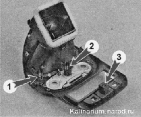

Выключатели на центральной консоли панели приборов - снятие и установкаРасположение и назначение выключателей, установленных в панели приборов и в накладке туннеля пола показано в главе «Органы управления и контрольно-измерительные приборы» На часть автомобилей в облицовку туннеля пола уставлены выключатели подогрева передних сидений. В накладке центральной консоли установлены выключатель аварийной сигнализации 3, выключатель обогрева заднего стекла 1 и переключатель режимов работы электровентилятора системы вентиляции и отопления салона 2. Для их демонтажа необходимо снять с панели приборов накладку центральной консоли. |